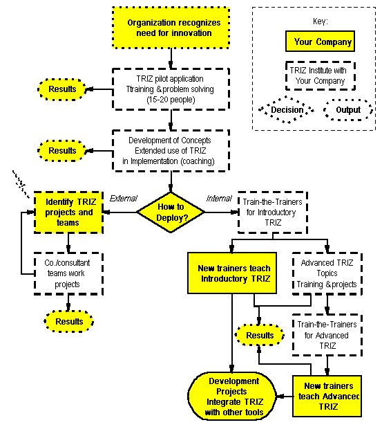

Ellen Domb, Ph.D. and James Kowalick, Ph.D., PE
The TRIZ Institute
190 N. Mountain Ave., Upland, CA 91786 USA
(909)949-0857 FAX (909)949-2968 e-mail: editor@triz-journal.com
TRIZ will give your organization the capability for breakthrough
solutions to difficult technical problems. TRIZ radically enhances the quality and
quantity of idea-generation. People who regard themselves as "uncreative" report
a 12x increase in idea generation, and people regarded as creative "superstars"
report a 3x increase in idea generation. (Ref.1)
Reading this paragraph, the technical professionals have one of two reactions:
Participants in this conference don't have to be offered any more information on
reaction "1"-you now have your own experience generating quantities of new
ideas, and seeing that breakthrough - quality ideas are possible in a field
that had already been thoroughly explored. But now you need to take TRIZ back to your
companies, to get the benefit of solving your own problems, in your own environment, where
you can develop these new ideas for competitive advantage -to patent, to set new
standards, or to get proprietary advantage from being first to market with new concepts,
or all three ways.
The primary obstacles to company-wide adoption of TRIZ are human, not technical:
The flow chart in Fig. 1 describes a method of introducing TRIZ into organizations that
overcomes these obstacles. This method uses no "tricks" of cultural change or
subtleties of organizational dynamics. It gets the technical professionals and technical
managers in engineering, production, distribution, and service to experience TRIZ
immediately, and helps them get breakthrough results on their own problems
immediately.

Figure 1. Flow chart for TRIZ implementation.
Project consulting (the "External" branch marked  ) can also be done
without initial training, if the goal is to get immediate technical results.
) can also be done
without initial training, if the goal is to get immediate technical results.
The effect of these immediate increases in creativity is that the obstacles labeled
"suspicion" and "NIH" are removed, and the organization then uses its
own resources (and its enhanced creativity) to reallocate the time of key people. In the
early stages of TRIZ implementation, having a lot of new ideas is not always seen as a
benefit, since the organization may lack the resources to follow up on all of them. (Ref.2)
The rationale for the process represented by the flow chart will be clear if each step
is analyzed in terms of its direct results-new ideas, new concepts, creativity
improvements-and its organizational change results.
Step 1 is the organization's decision that increased innovation is needed. Most
commonly this comes from competitive pressure, although occasionally it comes from
regulatory requirements. One or more organization managers are selected to be the TRIZ
"champions" to orchestrate the introduction and institutionalization of TRIZ.
Step 2 is the selection of one or more pilot projects for TRIZ introduction. The competitive or regulatory issues, or the organization's problem identification and corrective action selection system usually identify the candidate problems, and the "champion" works with the consultant to select those problems which will have the best combination of high-value payoff and usefulness as future teaching cases. These projects or problems are used as the case studies for an introductory experiential class.
The class has multiple benefits:
Step 3 is implementation of the results of the class. According to the needs of the
organization, this can be done as a joint effort or by the organization itself. The
results generated are solutions to the problems of implementation of the concepts
generated in Step 2, so this is a very visible, valuable reinforcement of the classroom
work in Step 2, with results that have immediate payoff.
After the successes in Steps 2 and 3, the TRIZ "champion" and the
organization's leadership pick one of 2 paths. The Internal path produces a full
team of internal TRIZ practitioners, who replace the external instructors and consultants
as their skills increase. The External path uses consultants to coach each team as
each project is identified. Hybrid approaches have also been used successfully, in which
the External path is followed for quick results, while the Internal path is
followed for development of future continuity. The External path is also frequently
used for strategic planning, for applications of TRIZ to technology forecasting for the
entire industry and for product platforms, while the Internal path is proceeding.
The internal experts learn the strategic uses of TRIZ, and become internal consultants as
well as instructors, during their advanced topics training.
As the organization develops its own internal experts, they take the lead in the
integration of TRIZ with the organization's existing methodologies. They become the
collective "champions" in overcoming the last obstacle to TRIZ implementation:
the traditional methods of project management. TRIZ will impact new product projects,
process improvement projects, and process re-engineering projects. Following the
right-hand "Internal" branch of the flow chart will overcome this
obstacle. As more and more people learn TRIZ, and as your company develops its internal
cadre of experts, they will integrate TRIZ with all your other tools. For example
At this level of integration TRIZ passes from being seen as a tool, or a system of
tools and methods, and becomes an intrinsic part of your organization's method of gaining
competitive advantage. Until it reaches this point, it will require nurturing and
"championship" to keep people aware of their opportunities to apply TRIZ.
References:
1. Valery Tsourikov, The Invention Machine Co., reporting on 18 years
experience with IMC's software, which uses TRIZ, at the Invention Machine Users
Group, Feb. 4-5, 1997. The authors' experience with US and western European
companies confirms the order of magnitude of these results. A study confirming
in increase in creative ideas for a global pharmaceutical company between 4X and
10X will be published in Nov., 1997 (W. Anderson, J.Farrell, and K. Tate, Total
Product Development Symposium)
2. Michael Cowley and Ellen Domb. Beyond Strategic Vision: Effective Corporate Action with Hoshin Planning. Boston: Butterworth-Heinemann, 1997.See chapter 12 for a parallel case of introducing a new methodology into organizations.